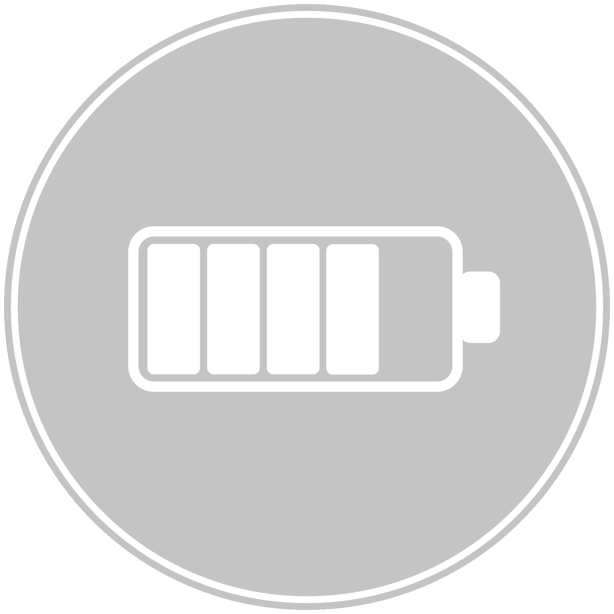

Get the coverage that’s right for your needs No matter where you are in life, you can get coverage that’s right for your needs with options that can help you protect your family’s future. Benefits are typically paid tax-free to the person you choose to receive your benefits.
Life insurance policies are portable, so you can keep your coverage if you change jobs or retire.
Guaranteed‐issue coverage may be available for some plans, which means no medical questions or exams are required to be eligible for coverage. Below is an overview of the major types of life insurance offered.
Almost half of U.S. households are underinsured, with the average coverage gap of $200,000.1
